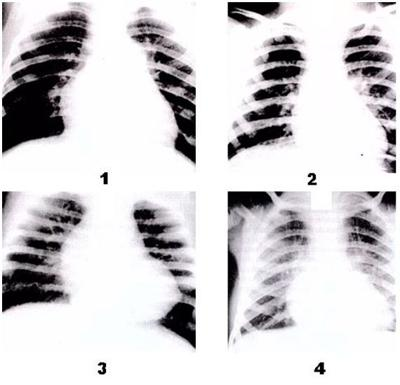
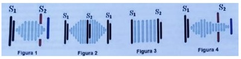
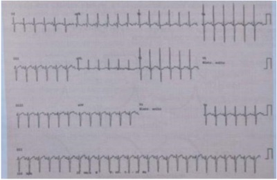
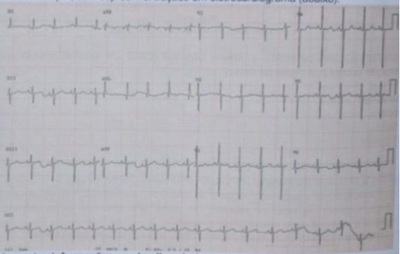
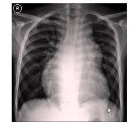
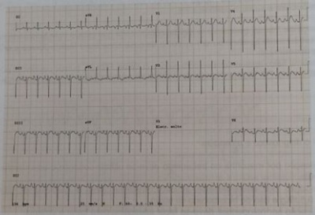
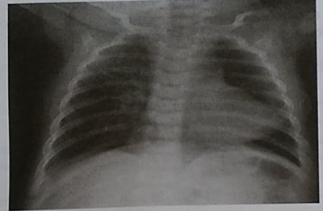
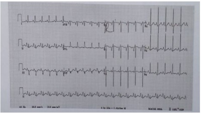

A detecção de alterações na ausculta cardíaca, principalmente o sopro, é o motivo mais frequente de encaminhamento para o cardiologista. É indiscutível que o parecer do especialista é essencial para o diagnóstico das cardiopatias, porém, em muitas situações, essas alterações representam variações da normalidade e sopros inocentes. Nesse contexto, torna-se importante uma avaliação pediátrica completa que evite encaminhamentos e exames desnecessários. Assinale a alternativa que apresenta achado ao exame físico que justifique o encaminhamento para avaliação do cardiologista.
Criança com 15 meses de idade está brincando na sala de espera do ambulatório. Apresenta cianose discreta ao redor da boca e com frequência ca em posição de cócoras, quando corre ca subitamente dispneica e cianótica e então ela retorna à posição de cócoras e logo volta a respirar confortavelmente com apenas uma sutil cianose perioral. Qual das opções a seguir representa o aspecto que encontraremos no raio X de tórax:
Revisar: possível letra faltando em enunciado
Recém-nascido (RN) a termo, no segundo dia de vida, apresenta quadro de cianose. A mãe não fez prénatal e chegou à maternidade em período expulsivo. Ao exame físico, o RN encontra-se com cianose labial e periférica, tiragem subcostal moderada, FR = 70ipm, FC = 150bpm, SatO2 = 80% e a ausculta cardíaca revela sopro sistólico leve, em borda paraesternal, apagamento de B1 e hiperfonese de B2. O ecocardiograma (ECO) mostrou transposição de grandes vasos, com septo atrioventricular íntegro. Para esse caso, o tratamento medicamentoso urgente é:
Criança de 8 anos, sexo feminino, vem a consulta devido a arroxeamento dos lábios e unhas, além de cansaço durante esforços físicos. Esses episódios começaram há cerca de 1 anos e estão se tronando mais frequentes. Nega internações prévias e quadros de chiados no peito. Familiar refere que no primeiro ano de vida, época em que fez puericultura, foi observado sopro sistólico e desconforto respiratório, porém médico disse que paciente devia ter "algum buraquinho no coração que fecharia sozinho". Refere também que sentia uma vibração torácica em região de rebordo esternal esquerdo baixo, mas que desapareceu ao longo dos anos. Qual hipótese diagnóstico deve ser investigada?
Uma criança em idade escolar é levada para consulta de rotina. Ela fazia acompanhamento em outra cidade e vem, hoje, para a primeira consulta com você. Ao exame físico, você detecta um sopro cardíaco. Qual das seguintes características indica se tratar de um sopro patológico?
Sobre o fenômeno (ou síndrome) de Eisenmenger, assinale a alternativa correta.
Assinale a alternativa que apresenta, corretamente, as estruturas que fazem parte da circulação cardíaca fetal e que, após o nascimento, evoluem normalmente para a oclusão espontânea.
Assinale a alternativa que corresponde a uma cardiopatia congênita cianótica com hipofluxo pulmonar.
Recém-nascido, 24 horas de vida, parto normal a termo, peso de nascimento 3020 g, Apgar 8/10, apresenta cianose ao chorar e às mamadas. A saturação de oxigênio é 93%, FR = 60 mrm, FC = 130 bpm, a ausculta pulmonar não tem alterações. Foi realizado teste de hiperóxia com oferta de oxigênio a 100% e coleta de gasometria em artéria radial direita, com PO₂ 96 mmHg. A hipótese diagnóstica provável é:
Um recém-nascido com peso de 3.100 g apresenta taquipneia e cianose central. Ao exame: hidratado, com murmúrio vesicular audível bilateralmente e ausência de sopro cardíaco. O oxímetro de pulso mostra uma saturação de 86%. Após vinte minutos de oxigenoterapia, a saturação atinge o valor de 88%. Com base nesse caso hipotético, assinale a alternativa que apresenta o diagnóstico mais provável.
Uma mulher de 32 anos procura atendimento médico com queixa de cansaço aos mínimos esforços. Refere sopro cardíaco desde a infância. Possui histórico de comunicação interventricular e evolução para Síndrome (ou fenômeno) de Eisenmenger nos últimos dois meses. Qual achado de exame físico é certamente encontrado nessa paciente?
Nas radiografias de tórax, a vascularização pulmonar estará diminuída na seguinte enfermidade:
Menina de 13 anos apresenta hipertensão arterial (aferida no membro superior direito), diminuição da amplitude dos pulsos femorais e di culdade de palpar os pulsos tibiais anteriores e posteriores. Mantém saturação arterial acima de 95% nos membros superiores e inferiores, sem diferença significativa entre eles. Raio x de tórax: presença do sinal de Röesler (desgaste das bordas inferiores das costelas). O adolescente é portador de:
Você está diante de um recém-nascido a termo que acabou de nascer de parto vaginal sem intercorrências. Esse bebê apresenta choro vigoroso e, com cerca de 2 minutos, o obstetra realiza o clampeamento do cordão umbilical. Assinale a alternativa com a melhor descrição das alterações cardiorrespiratórias que estão ocorrendo nesse momento.
Menino, 4 meses de idade, em consulta de rotina, foi auscultado sopro cardíaco sistólico em borda esternal esquerda e desdobramento de segunda bulha, que não havia sido ouvido nas consultas anteriores. Tem bom estado geral, crescimento e desenvolvimentos próprios para idade, em aleitamento materno exclusivo. Realizou ECG em que se notou desvio de eixo cardíaco para a direita e radiografia de tórax com aumento de área cardíaca, a custa de câmaras direitas e aumento do uxo pulmonar. O diagnóstico adequado ao quadro apresentado é
Ao nascimento um recém nascido aparenta estar normal e subitamente após 24 horas desenvolve quadro de baixo débito, pele acinzentada, taquipneia, di culdade respiratória e hipotermia. Concomitantemente aparecem sinais de acidose metabólica, hipoglicemia, anúria e choque. As bulhas cardíacas são normofonéticas, com segunda bulha única e sem sopros. Pulsos reduzidos nos quatro membros. Radiogra a de tórax mostra cardiomegalia leve com aumento da trama vascular pulmonar. Ecocardiograma mostra hipoplasia da valva mitral e da raiz da aorta, um átrio esquerdo e ventrículo esquerdo pequenos e átrio direito e ventrículo direito aumentados. Baseado na principal hipótese diagnóstica analise as asserções abaixo e a relação proposta entre elas. I – A utilização de oxigênio suplementar é fundamental na terapia inicial desta situação. PORQUE II – O tratamento clínico visa estabilizar o paciente para o tratamento cirúrgico, que deve ser realizado assim que houver condições clínicas adequadas. A respeito destas asserções, assinale a opção correta.
RN, com duas horas de vida, está taquicardíaco, taquipneico e com SpO₂ = 69% em ar ambiente (sem melhora com oxigênio suplementar). Exame físico: hiperfonese da segunda bulha cardíaca; sem sopros. Radiogra a do tórax: trama vascular pulmonar aumentada; estreitamento do mediastino e área cardíaca diminuída. A conduta imediata, mais adequada, é:
Menina de 4 anos é trazida para consulta em unidade básica de saúde. Pais percebem que criança respira rápido e forte durante as atividades físicas e para de brincar com pouco tempo de exercícios. Durante o exame físico observa-se: bom estado geral, corada, hidratada, acianótica (sat O₂ 96% em membro superior esquerdo). Aparelho respiratório: murmúrio vesicular audível difusamente, sem ruídos adventícios, sem esforço, FR: 20 irpm. Aparelho cardiovascular: ritmo regular com 2 bulhas normofonéticas, sem sopros audíveis, FC: 90 bpm; pulsos cheios em membros superiores e de difícil palpação em membros inferiores. Abdome ácido, indolor e sem massas palpáveis; extremidades sem edema, mãos aquecidas e pés frios. Considerando a principal hipótese diagnóstica, qual seria a complicação mais frequente?
Qual é a cardiopatia cianótica mais comum em recém-nascidos?
Uma paciente com 25 dias de vida, portadora de síndrome de Down, estenose infundibular pulmonar, comunicação interventricular, hipertro a concêntrica do ventrículo direito e dextroposição da aorta, está internada desde o nascimento para ganho de peso. Apresentou, imediatamente após a punção de acesso venoso periférico, quadro de irritabilidade, choro inconsolável e agravamento severo de cianose. Com base nesse caso hipotético, é correto a rmar que, no atendimento à paciente, além de oxigenoterapia, deve-se considerar a prescrição de
Lactente de 5 meses de idade, portador de tetralogia de Fallot, apresenta, repentinamente, piora da cianose, dispneia e agitação. A conduta a ser instituída para a reversão do quadro é:
Lactente, quatro meses de idade, é encaminhado da UBS com história de di culdade de ganho de peso, cansaço às mamadas e sudorese intensa. Examefísico: taquidispnéia, sopro sistólico rude no bordo esternal esquerdo baixo e taquicardia. Eletrocardiograma: sobrecarga biventricular; radiogra a de tórax: hiper uxo pulmonar. Qual é o diagnóstico mais provável?
Paciente de 6 meses de idade, sexo masculino, vem à consulta de puericultura sem queixas no momento. Durante o exame físico você percebe sopro cardíaco sistólico de 2+/6 em bordo esternal esquerdo alto, sem irradiações e desdobramento fixo de B2. Ganho de peso limítrofe e restante do exame físico sem alterações. Qual a hipótese diagnóstica mais adequada a este caso?
Você é chamado para avaliar uma criança de 2 anos, oriunda do Interior do Estado do Amazonas, que foi diagnosticada com um sopro cardíaco pelo médico do posto de saúde local. A criança é eutró ca, está normocorada, acianótica, afebril, ativa, hemodinamicamente estável. A mãe refere que a paciente nunca foi internada por quaisquer doenças até o momento. À ausculta cardíaca, apresenta sopro pan-sistólico de elevado volume, mais audível na borda esternal inferior esquerda. Nesta internação, realizou ecocardiograma transtorácico com doppler que evidenciou comunicação interventricular do tipo membranosa, de pequeno diâmetro, com shunt do ventrículo esquerdo para o direito de discreta monta, sem sinais de hipertensão pulmonar detectáveis pelo método. Não foram observadas outras máformações cardíacas. Sobre o caso, assinale a alternativa
Revisar: possível letra faltando em enunciado
A comunicação interatrial (CIA)
Lactente masculino com 3 meses de idade apresenta cansaço e interrupções às mamadas, cianose perioral quando chora muito e ganho pondero-estatural insu ciente. AP: sopro cardíaco desde o nascimento. Exame físico: REG, FR 71 irpm, FC 159 bpm, mucosas descoradas (2+/4+), acianótico, pulsos com amplitude aumentada, tempo de enchimento capilar de 3 segundos, tiragens intercostal e subdiafragmática, crepitações pulmonares bilaterais, sopro sistólico e diastólico (2+/6+) na borda esternal esquerda superior com irradiação para o dorso, fígado palpável a 4 centímetros do RCD e o baço palpável a 2 centímetros do RCE. Esse lactente encontra-se em insuficiência cardíaca com padrão hemodinâmico
Revisar: possível letra faltando em enunciado
Os principais achados de insuficiência cardíaca no lactente são:
A figura abaixo refere-se a quatro radiogra as de tórax de crianças com cardiopatias obstrutivas em fases de compensação cardíaca. Relacione o número do RX com a descrição provável do quadro patológico. [ ] Coarctação acentuada da aorta, “cor” globoso e saliente arco superior direito por dilatação da aorta ascendente [ ] Estenose pulmonar valvar acentuada, “cor” globoso e arco médio abaulado (dilatação arterial pulmonar pós-estenótica) [ ] Estenose mitral acentuada recém operada, “cor” globoso, aumento da aurícula esquerda e da trama vascular pulmonar com congestão e mudança do padrão pulmonar habitual [ ] Estenose aórtica, moderada repercussão, “cor” globoso

Leia o caso clínico a seguir. Durante consulta de rotina, a mãe de uma criança de três anos relata que ela tem se queixado com frequência de cefaleia, seguida por vômitos ocasionais e dor em membros inferiores após as brincadeiras. Ao exame físico, é auscultado sopro sistólico em borda esternal esquerda, persistentemente audível até o dorso e discordância entre os pulsos e a oximetria dos membros superiores e inferiores. Nesse caso, qual é a principal hipótese diagnóstica?
Em qual cardiopatia a Operação de Jatene está indicada?
Pré-escolar, 4 anos e 9 meses, sexo feminino, é trazida à emergência devido sopro cardíaco. Ao exame físico apresenta ritmo cardíaco regular em dois tempos, bulhas normofonéticas, sopro sistólico de curta duração e baixa intensidade (2+/6+), musical, melhor audível em borda esternal esquerda baixa, e intensidade diminui quando muda de posição. Ausência de frêmito. Ausência de irradiação. Ausência de extrassístoles. Nega síncope. Nega intercorrências. Com base no caso, assinale a alternativa que apresenta
Lactente de seis meses, em acompanhamento com diagnóstico de tetralogia de Fallot, apresenta quadro súbito de agitação, taquipneia e piora da cianose, seguido de síncope no domicílio. Genitora leva a criança à emergência, sendo atendida por médico que prontamente inicia oxigenoterapia e posiciona o paciente com os joelhos etidos sobre o abdome (posição genupeitoral). A conduta utilizada tem como principal objetivo:
Recém-nascido com 6 horas de vida foi internado no Centro de Tratamento Intensivo Neonatal em regime de emergência por cianose precoce e grave, com clínica sugestiva de acidose metabólica, pulsos palpáveis nas quatro extremidades e saturação de oxigênio de 80%. À ausculta, não foi identi cado sopro, apenas um estalido após a primeira e a segunda bulhas, sem desdobramento. Não apresentava sinais congestivos. Durante a gestação, não houve intercorrências embora a mãe tivesse realizado consultas irregulares de pré-natal e apenas uma ultrassonogra a obstétrica com 16 semanas, mas nenhuma ecocardiogra a fetal. Iniciou- se tratamento com oxigênio, foi coletado sangue para exames laboratoriais e realizadas eletrocardiogra a, que mostrou sobrecarga atrial direita e ventricular esquerda, e radiogra a de tórax, que evidenciou coração pequeno e hipo uxo pulmonar importante. Antes da avaliação do cardiologista e da realização de ecocardiografia, qual a hipótese diagnóstica mais provável?
Revisar: possível letra faltando em enunciado
Um lactente com seis meses de vida, em seguimento com cardiologista devido à tetralogia de Fallot, sem uso de medicação, foi internado por piora das crises de cianose na última semana. Ao exame, paciente cianótico, irritado e choroso, com saturação de oxigênio por oximetria de pulso com valor de 52% e frequência cardíaca de 165 bpm. Com base no quadro do paciente nessa situação hipotética, além de oxigênio suplementar, a conduta mais adequada no momento é
Assinale a alternativa que correlaciona, corretamente, as cardiopatias congênitas com suas características siopatológicas. I. Comunicação interventricular. II. Estenose valvar aórtica. III. Tetralogia de Fallot. IV. Transposição das grandes artérias sem estenose valvar pulmonar. A – Cardiopatia acianótica com hiper uxo pulmonar. B – Cardiopatia acianótica com normo uxo pulmonar. C – Cardiopatia cianótica com hiperfluxo pulmonar. D – Cardiopatia cianótica com hipofluxo pulmonar.
São consideradas cardiopatias acianogênicas com hiperfluxo pulmonar:
Uma criança de 6 meses de idade foi submetida a um cateterismo cardíaco, que evidenciou as seguintes saturações de oxigênio: Veia cava superior: 75%; Átrio direito: 75%; Ventrículo direito: 85%; Artéria pulmonar: 85%; Veias pulmonares: 95%; Átrio esquerdo: 95%; Ventrículo esquerdo: 95%; Artéria aorta: 95%. Baseado nestes dados, a criança provavelmente é portadora de
Você está examinando uma criança de 2 meses de vida com história de sudorese profusa, taquipneia e cansaço às mamadas, com intensi cação dos sintomas há 3 semanas. A saturação de oxigênio é de 95% em ar ambiente. A radiogra a de tórax evidencia cardiomegalia global, com aumento da trama vascular pulmonar, e o eletrocardiograma evidencia sobrecarga biventricular. Na ausculta, há a presença de sopro. Baseado nestes dados, qual a representação esquemática mais provável do sopro encontrado? S1- primeira bulha; S2 - segunda bulha.

Menino, 8 anos de idade, portador de síndrome nefrótica corticodependente, encontra-se internado há dois dias por quadro atual de descompensação da síndrome, desencadeada por infecção de vias aéreas superiores. Está recebendo albumina humana 20% intravenosa. Após a infusão de cerca de metade da dose, apresenta queixa de desconforto respiratório. Em sua avaliação clínica, nota-se FR: 32 ipm, FC: 138 bpm, PA: 140/88 mmHg, Saturação de Oxigênio de 89% em ar ambiente, ausculta de estertores crepitantes em ambas as bases pulmonares e fígado palpável a 3 cm do rebordo costal direito. Qual é o medicamento indicado neste momento?
Diante de uma criança com sopro, o pediatra deve fazer o diagnóstico diferencial entre sopro inocente e patológico. Considerando as características de um sopro inocente, analise as assertivas a seguir: I - Sopro sistólico e de curta duração. II - Mais intenso com a criança em posição ortostática. III - Redução de intensidade com a mudança da posição supina para sentada. Quais estão corretas?
Escolar, seis anos, masculino, em consulta pediátrica de rotina, apresenta à ausculta cardíaca sopro em borda esternal esquerda média, musical e de baixa intensidade. Ocorre no início da sístole sendo bem audível no decúbito dorsal, diminuindo a intensidade quando de pé. A principal hipótese diagnóstica é:
Qual destas cardiopatias é mais frequente na Síndrome de Down?
Paciente de 3 meses de vida, cianose central desde o nascimento. Peso atual de 3,5 quilos. Ao exame físico, primeira bulha maior em foco mitral que tricúspide, sopro sistólico em borda esternal esquerda baixa. Ao Raio X, diminuição da circulação pulmonar e aumento de ventrículo esquerdo. Ao ECG, sobrecarga ventricular esquerda com hemibloqueio anterior esquerdo. Pulsos normais. A doença mais provável é:
Gestante hipertensa grave necessita de cesárea de urgência. Dá à luz a recém- nascido prematuro extremo de 27 semanas, com peso de nascimento de 850g e Apgar 6/8. Necessitou ser reanimado na sala de parto com intubação orotraqueal por taquidispneia grave. Ao chegar à UTI neonatal, precisou de reposição de surfactante pulmonar por doença de membrana hialina e evoluiu satisfatoriamente, sendo extubado para ventilação não invasiva no 3º dia de vida. Contudo, no 5º dia de vida, apresenta apneias de repetição, retornando para ventilação mecânica com fração de oxigênio alta. Ao exame físico, apresenta precórdio hiperdinâmico e pulsos radiais em martelo d’água. À ausculta, apresenta sopro sistólico 4+/6+ em maquinaria, melhor audível em borda esternal esquerda com irradiação para a clavícula esquerda. O diagnóstico mais provável é:
Um recém nascido a termo, parto normal, pesando 3,5 Kg, nasceu bem, com pré natal sem fatores de risco, com uma hora de vida iniciou um quadro de cianose central moderada, apresenta-se eupneico. Qual é o diagnóstico mais provável?
Recém-nascido com 4 dias de vida, sexo feminino, é levada à Unidade de Pronto Atendimento (UPA) por apresentar, há cerca de 12 horas, di culdade respiratória progressiva e recusa às mamadas, com piora importante nas últimas 2 horas. Mãe refere gestação sem intercorrências, sorologias negativas e triagem negativa para GBS. O parto foi vaginal, com bolsa rota no ato, com 39 semanas de idade gestacional. O bebê pesou 3.500 gramas e apresentou escore de Apgar de 9/10. Permaneceu em alojamento conjunto, sem intercorrências clínicas e teve alta com 48 horas de vida, após realizar o teste do pezinho (a mãe refere que não sabe se os testes do coraçãozinho, olhinho e orelhinha foram realizados). Ao exame, apresentava-se em mau estado geral, palidez acinzentada, taquidispneico, frequência cardíaca = 200 bpm, frequência respiratória = 80 ipm, sem sopros à ausculta cardíaca, pulsos periféricos reduzidos nos 4 membros, perfusão periférica > 5 segundos. O provável diagnóstico para esse caso é:
Quanto às repercussões pulmonares e sistêmicas da Persistência do Canal Arterial (PCA) em recém-nascidos, é CORRETO afirmar que
Nas crianças com diagnóstico de CIV, é CORRETO afirmar que
Em paciente nascida a termo, durante avaliação clínica com quinze dias de vida, foi detectado sopro contínuo com hiperfonese de segunda bulha, pulsos periféricos amplos sem cianose. A principal hipótese diagnóstica, para a provável cardiopatia com os dados descritos, é:
Paciente, 10 anos, durante consulta de rotina observou-se hiperfonese de B1 e desdobramento xo de B2. Sopro sistólico +/6 em borda esternal esquerda. Pressão arterial e pulsos normais. É uma criança saudável e joga futebol. Diante do relato qual lesão cardíaca é a mais provável?
Uma criança com tetralogia de Fallot apresenta as seguintes alterações cardíacas:
Lactente, 3 meses, é levado a emergência com história de cianose. Mãe refere que percebe o bebê "roxo" desde o nascimento, porém com piora nas últimas semanas, apresentando também cansaço e palidez durante o choro. Ao exame: cianose central, SatO₂: 80%, FC: 140bpm, FR: 45irpm. Sopro sistólico discreto. Pulsos palpáveis e simétricos. ECG: sobrecarga ventricular esquerda. Radiogra a torácica: hipo uxo pulmonar. Diante do quadro clínico e exames complementes apresentados, qual a cardiopatia congênita mais provável?
Lactente de 3 meses de idade tem síndrome de Down com comunicação atrioventricular, apresenta cansaço e interrupções às mamadas, cianose perioral quando chora muito. Exame físico: FC 166 bpm, FR 60 irpm, REG, mucosas descoradas (2+/4), cianose discreta de extremidades, pulsos nos com amplitude diminuída, tempo de enchimento capilar de 4 segundos, tiragem intercostal e subdiafragmática, ausculta pulmonar com crepitações bilaterais, coração rítmico com sopro holossistólico (2+/6) na borda esternal esquerda inferior, com irradiação para a direita, com segunda bulha hiperfonética e ritmo de galope. Abdome discretamente distendido, fígado palpável a 5 centímetros do rebordo costal direito e baço palpável a 3 centímetros do rebordo costal esquerdo. O padrão hemodinâmico da insuficiência cardíaca é
Na circulação fetal, para que o sangue oxigenado da placenta atinja os órgãos do concepto, há 3 intercomunicações vasculares: o ducto venoso, o forame oval e o ducto arterial. Sobre essas comunicações é correto afirmar que
Mãe traz à consulta criança com 40 dias de vida, com queixa de cansaço e sudorese profusa às mamadas desde o nascimento, com piora nos últimos dias. Ao exame físico apresenta hipotonia generalizada, frouxidão ligamentar, epicanto palpebral, protrusão lingual e prega palmar única. Murmúrio vesicular presente e simétrico, com roncos difusos; frequência respiratória de 60 ipm, com tiragem subdiafragmática e retração intercostal. Bulhas rítmicas em dois tempos com sopro sistólico em borda esternal esquerda. Trouxe consigo um eletrocardiograma. Baseado nestas informações, qual a cardiopatia mais provável?

Você foi chamado para avaliar um recém-nascido de parto normal a termo de 2 dias de vida que apresentou saturação de 83% à oximetria de pulso. Ao exame físico, a criança apresenta cianose discreta, ausculta pulmonar normal com frequência respiratória de 35 ipm e frequência cardíaca de 110 bpm, sem sopros. Foi traçado um eletrocardiograma. Baseado nestas informações, qual o diagnóstico mais provável?

Qual das alterações abaixo NÃO está presente na tetralogia de Fallot?
Em uma consulta de rotina, foi diagnosticado sopro cardíaco novo em um pré-escolar de 5 anos, previamente hígido. Ao exame físico, o paciente apresentava-se em bom estado geral, anictérico, acianótico, hidratado, corado, com boa perfusão periférica e pulsos periféricos palpáveis. À ausculta cardíaca, apresenta: ritmo cardíaco regular, dois tempos, com desdobramento de segunda bulha à inspiração e sopro sistólico 2+/6+ melhor audível em borda esternal esquerda, sem irradiações, com redução de intensidade quando o paciente assume a posição ortostática. FC = 100 bpm; fígado a 2 cm do rebordo costal direito; restante do exame físico sem alterações. Classi cação nutricional: escore-z de peso/idade = -1,05; escore-z de peso/estatura = -0,97; escore-z de estatura/idade = -0,29; escore-z de IMC = -1,01. Em relação a esse caso, a conduta adequada é:
São características do sopro inocente EXCETO?
Assinale a cardiopatia congênita mais frequente e seu sinal clínico mais comum:
Um RN com quatro dias de vida chegou ao pronto-socorro com irritabilidade, sudorese e dispneia. A mãe refere um parto normal, sem complicações. A temperatura é de 36,5°C, o pulso é de 210 batimentos/min e a frequência respiratória é de 60/min. No exame físico, a ausculta cardíaca mostra um sopro sistólico 2/6+, que é mais bem ouvido na borda superior esternal esquerda, com irradiação para a área interescapular esquerda. Palpação do abdômen mostra aumento do fígado. Os pulsos femorais estão ausentes bilateralmente e as extremidades inferiores parecem cianóticas em comparação com as extremidades superiores. Com base nesse caso hipotético, assinale a alternativa que apresenta o diagnóstico mais provável.
Recém-nascido a termo de 3 kg foi levado ao Pronto Atendimento pelos pais no 5º dia de vida, por tarquidispneia, palidez cutânea e di culdade para mamar. Ao exame físico, descreve-se FC 176 bpm, FR 74 irpm e satO₂ 89%, ausculta pulmonar com crepitações bilaterais e no aparelho cardiovascular, presença de B2 hiperfonética, sem sopros, pulsos periféricos liformes, ausência de pulsos femorais, com tempo de enchimento capilar aumentado. Não houve resposta clínica após a administração de oxigênio inalatório. O tratamento imediato indicado é:
Recém-nascido, sexo feminino, com 23 dias de vida, em aleitamento materno exclusivo. História de parto cesáreo, a termo, peso ao nascimento 3.200 gramas. Consulta na Unidade Básica de Saúde com relato de que, há uma semana, começou a apresentar cansaço às mamadas e suando muito. Ao exame físico, observa-se bom estado geral com taquipneia, pressão arterial divergente, pulsos com amplitude aumentada, precórdio hiperdinâmico e sopro contínuo com irradiação e audível também no dorso. Assinale o diagnóstico MAIS PROVÁVEL para esse caso:
Recém-nascido a termo, masculino, pesando 3.700 nascido de parto vaginal sem complicações. Alimentou-se bem no peito, urinou e eliminou mecônio nas primeiras 12 horas de vida. Com 15 horas de vida, ele passou a recusar a alimentação e parece cianótico. Neste momento, sua frequência respiratória era de 65 irpm, a saturação de oxigênio à oximetria de pulso era de 80% e o tempo de enchimento capilar de 3 segundos. À ausculta cardíaca, não apresentava sopro cardíaco audível, mas notava-se uma segunda bulha, que é a única e hiperfonética. Com relação ao caso clínico, assinale a alternativa INCORRETA.
Um recém-nascido foi trazido à emergência duas semanas após a alta da maternidade, em choque. O exame físico mostrou ausência de sopro cardíaco e ausência de pulsos em membros inferiores. O eletrocardiograma exibiu sobrecarga ventricular direita. Qual o diagnóstico mais provável desse bebê?
Lactente de 45 dias de vida apresenta cansaço ao respirar e às mamadas desde os 15 dias de vida, com piora progressiva. EF = desnutrido; apático; taquidispneico; extremidades frias; tempo de enchimento capilar prolongado; pulsos nos e rápidos; FC = 190 bpm; com sopro sistólico ejetivo rude (3+/6+) na borda esternal direita superior, com irradiação para a fúrcula e carótidas; fígado palpável a 5 cm do rebordo costal e edema na região sacral. O tratamento inicial é:
Em consulta de rotina de um menino de 7 anos, assintomático, detecta-se a presença de sopro cardíaco sistólico, de timbre musical, baixa intensidade, localizado em borda esternal esquerda baixa. O sopro não é auscultado quando o menino está na posição ereta. O provável diagnóstico é
Tetralogia de Fallot é uma cardiopatia congênita cianótica mais comum na infância. A forma clássica consiste em defeito do septo
Das doenças congênitas do coração, em recém-nascidos a termo, a que ocorre com maior frequência é o(a):
Em relação a propedêutica cardiológica infantil responda a questão abaixo. Um Recém nascido, 48 horas de vida com teste do coraçãozinho normal apresenta ao exame físico cardiológico: Ritmo regular, íctus sem anormalidades; ausência de frêmito; primeira bulha normofonética; segunda bulha normofonética com desdobramento variável; sopro sistólico suave ++/4+ em foco pulmonar com irradiação para ambas as axilas; ausência de visceromegalia; pulsos palpáveis igualmente nos 4 membros. Qual hipótese diagnóstica:
Criança, 5a, em consulta de puericultura, foi auscultado sopro sistólico em foco pulmonar e desdobramento fixo da segunda bulha. Segundo a mãe, a criança é ativa, alimenta-se bem, não tendo notado nada de errado com o lho. A hipótese diagnóstica e a justificativa para os achados semiológicos são:
As cardiopatias congênitas podem causar diversas complicações, entre elas as crises de hipóxia, que provocam muita angústia nos familiares. A patologia que NÃO apresenta essa complicação é:
Entre as alternativas abaixo assinale a cardiopatia congênita que com menos frequência leva à insuficiência cardíaca.
Em relação aos sopros inocentes é verdadeiro afirmar exceto:
As cardiopatias congênitas se caracterizam por estarem presentes ao nascimento e podem ser classificadas em cardiopatias cianogênicas e acianogênicas. Em relação às cardiopatias congênitas, assinale a alternativa INCORRETA.
Um adolescente de 12 anos é admitido no pronto-socorro apresentando queixas de hemoptise, falta de ar, tonturas e palpitações. Ao exame físico, observam-se cianose central, baqueteamento digital, turgência jugular, taquipneia, ausculta pulmonar com murmúrio vesicular normal, frequência cardíaca de 120 bpm, presença de sopro holossistólico, em foco tricuspídeo, hiperfonese de segunda bulha, fígado palpável a quatro centímetros do rebordo costal direito e pressão arterial sistêmica de 130 x 100 mmHg. A mãe relata que o lho é portador de comunicação interventricular (CIV) e que, desde os sete anos, não faz acompanhamento médico. Após estabilização clínica, com oferta de oxigênio, sob cateter nasal, foi realizada a seguinte radiogra a de tórax. De acordo com o exposto, a principal hipótese diagnóstica, o exame comprovatório e o tratamento são, respectivamente:

Qual é a cardiopatia congênita que está mais associada aos portadores da síndrome de Down?
Os fatores que determinam a intensidade do uxo sanguíneo, entre as circulações esquerda e direita na comunicação interventricular são:
Mãe refere que criança de 2 meses está apresentando cansaço e sudorese às mamadas. No exame físico você observa um sopro cardíaco sistólico +++/6 em bordo esternal esquerdo baixo, taquipnéia moderada (FR = 65 irpm), saturação do oxigênio de 95%. Além disso apresenta estigmas compatíveis com síndrome de Down. Você solicita radiogra a de tórax, que demonstra área cardíaca aumentada e trama vascular pulmonar aumentada, e, eletrocardiograma. Qual o diagnóstico mais provável para essa criança?

Criança com 3 meses de idade é trazida à consulta com história de sopro cardíaco desde o nascimento e cianose ao choro. Ao exame físico, há sopro sistólico 4+/6+ em borda esternal esquerda alta, e a saturação de oxigênio em ar ambiente é de 85%. A ausculta pulmonar é limpa, com frequência respiratória de 42 ipm. Você solicita uma radiografia de tórax. Frente a estes dados, o diagnóstico mais provável é:

Um bebê de 20 dias de vida, nascido a termo, com peso de 3700 g, aparentemente saudável, passa a apresentar cianose generalizada e dispneia que se acentua nas mamadas. O pediatra verifica que, durante o sono, a saturação periférica de oxigênio é de 65%, a frequência cardíaca de 140 bpm, e ausculta sopro sistólico pouco intenso, precordial. Decide consultar o cardiologista pediátrico que opta por internar a criança na UTI, para iniciar medidas terapêuticas e diagnósticas. Que droga deve ser iniciada prontamente?
A ausculta caracterizada por segunda bulha normofonética desdobrada xa em foco pulmonar e ausência de sopro sugere qual das patologias abaixo:
Menina, 5a, encaminhada ao ambulatório de cirurgia cardíaca com diagnóstico de comunicação interatrial tipo ostium secundum confirmada por ecocardiogra a. QUAIS ACHADOS SEMIOLÓGICOS E DE EXAMES LEVARAM O PEDIATRA A ESTE DIAGNÓSTICO?
Considerando as características do sopro inocente de Still, é correto afirmar que:
Qual das cardiopatias abaixo cursa com hipofluxo pulmonar?
Um lactente de 11 meses, previamente saudável, vem para consulta de puericultura por estar com di culdade de ganho de peso e infecções respiratórias de repetição. Você observa no exame de precórdio a presença de um sopro sistólico de ejeção em borda esternal esquerda no segundo espaço intercostal e de um desdobramento xo de segunda bulha. ECG mostra uma sobrecarga ventricular direita com QRS tipo rSR´. Raio X de tórax com cardiomegalia à custa de câmaras direitas e circulação pulmonar aumentada sem sinais de congestão. Qual o diagnóstico mais provável?
A Comunicação Interventricular (CIV) é a cardiopatia congênita mais frequente, podendo ser encontrada de forma isolada ou associada a outras anormalidades. Sobre essa cardiopatia, assinale a alternativa CORRETA.
Recém-nascido de termo, por parto vaginal, sem intercorrências, apresenta choro forte logo após o nascimento. O cordão umbilical é clampeado com cerca de 2 minutos de vida. Aos 5 minutos, o boletim de Apgar é 9. Sabe-se que, nesse momento, na fase de circulação transicional, uma série de adaptações hemodinâmicas estão ocorrendo com esse bebê. Assinale a alternativa CORRETA.
Pacientes com síndromes genéticas é comum que sejam portadores de cardiopatias congênitas. Na síndrome de Down, a cardiopatia está presente em 50% dos casos. Das alternativas apresentadas, qual a cardiopatia acianótica mais comum na síndrome de Down?
Crianças portadoras de tetralogia de Fallot podem apresentar crises hipoxêmicas. As medidas mais indicadas nesses momentos são:
Você é chamado para ver um eletrocardiograma de um bebê na UTI. O bebê nasceu bem, mas logo cou cianótico (saturação de oxigênio= 82% em ar ambiente). Não há sopro cardíaco. O eletrocardiograma pode ser visto abaixo: Qual o diagnóstico mais provável?

Menino de 13 meses, 11 kg, portador de cardiopatia cianótica, é trazido à sala de urgência com história de ter apresentado quadro de irritabilidade, piora de cianose préexistente e síncope. Ao exame físico, apresenta-se torporoso, saturação de 60% em ar ambiente, sopro sistólico em 2/6 em foco pulmonar. O diagnóstico mais provável é:
Entre os aspectos fundamentais que diferenciam a circulação fetal da circulação pós- natal, observa-se:
Recém-nascido com 8 dias de vida é trazido ao pronto socorro com história de desconforto respiratório iniciado há 2 dias, com piora progressiva. Nasceu de parto normal, com 39 semanas, pesando 3,760 g, com índice de Apgar 8 e 9 no 1° e 5° minutos, respectivamente, e recebeu alta no 1° dia de vida com aleitamento materno exclusivo. A mãe nega febre ou outros sintomas. Ao examiná-lo, você percebe palidez cutânea, FC 175 bpm, FR 64 irpm, PA 72 x 40 (56) mmHg no membro superior direito e PA 43 x 24 (31) mmHg no membro inferior esquerdo, ausculta pulmonar normal e ausculta cardíaca revela sopro contínuo em borda esternal esquerda alta. Os pulsos periféricos são nos e a perfusão é de 2 segundos na mão direita. Na conduta imediata mais apropriada deve-se:
Menino, 6 anos, comparece para consulta de rotina. Mãe refere que criança é preguiçosa e gosta muito de televisão e vídeo game. Nega outras queixas ou antecedentes mórbidos. Ao exame apresenta-se em sobrepeso e pressão arterial normal. Na ausculta cardíaca você encontra bulhas rítmicas com presença de sopro sistólico de ejeção, relativamente curto, vibratório e mais bem audível no bordo esternal esquerdo, ausência de frêmito, sem irradiação para dorso e que diminui na posição sentada. Qual a provável hipótese diagnóstica?
No exame de rotina de um lactente de quatro meses com di culdade de ganho ponderal você observa presença de um sopro cardíaco holossistólico de regurgitação, mais audível entre o terceiro e quarto espaços intercostais esquerdos, irradiando-se em faixa para a direita, e segunda bulha hiperfonética na área pulmonar. No raio X de tórax observa-se aumento da circulação pulmonar com cardiomegalia à custa das cavidades esquerdas. O diagnóstico mais provável é: Respostas: 1 12 23 34 45 56 67 78 89